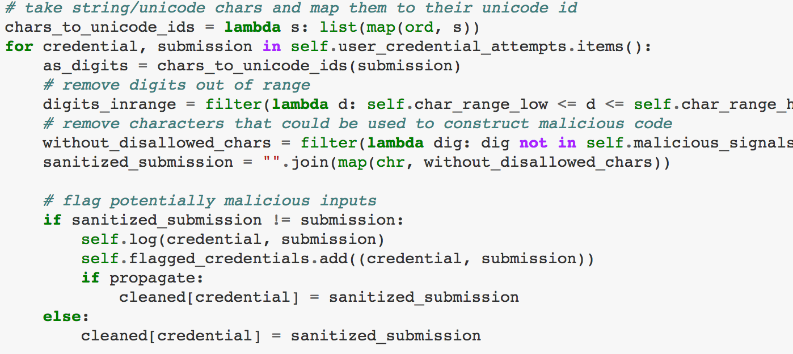
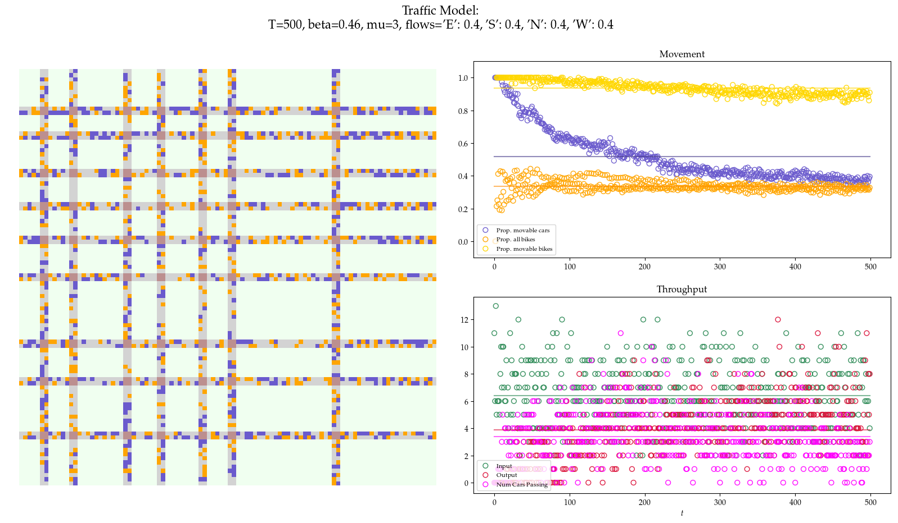

Projects
For my full list of projects, please visit my github page.
WePanic (Spring/Summer 2018)
- Successfully constructed a deep learning system capable of predicting human heart rate and respiratory rate from a smart phone video.
- Implemented advanced video manipulation software using Python libraries such as OpenCV, PIL, numpy, and scipy.
- Developed and tested neural networks using Keras and Tensorflow.
- Publication in progress and TBA.
The task alone deviates from the similar and widely researched action recognition problem, not only because we must predict values from a continuous domain, but due to the shifted focus in spatiotemporal feature learning.
Traditionally, action recognition tends to lean on the spatial side, processing small chunks of a frame sequence at a time in order to build a general understanding. Here, succesful completion of the task requires the network to learn to recognize sequence data as a frequency, meaning larger frame sequences should be fed in, however the spatial information within a single frame of the sequence is relatively unimportant and can be downsampled.
Another interesting element of the project is the data itself. Though various standardization steps were taken, this data could be accurately classified as "extremely noisy". Not only were videos ranging in film quality, but label submissions (HR and RR) were problematic. Each subject was tasked with recording their own 30 second video and counting their heart rate and respiratory rate with the aid of a partner. This process understandably may introduce errors such as human counting inaccuracies, poor filming conditions, and timing errors. A timing error comes from the subject recording a video for longer or shorter than 30 seconds, but computing their breaths/beats on a minute basis.
Finally, each subtask is uniquely understood by the neural network. In heart rate prediction, the network must learn to count beat frequencies across a specified time domain (in this case 6 seconds) and apply a simple transformation to its count (multiplication by 10, maybe) to reach a prediction. Respiratory rates are a bit more complicated. Not only must the network learn to count beat frequency, but it must also learn the complex, weakly linear relationship between the two labels.

High performance neural network predictions across an entire video stream.
Top Left: Predictions and error rates.
Bottom Right: Processed input to the neural network.
Background: Originally recorded iPhone video.
The actual value of subject's heart rate and respiratory rate are left static as they were directly submitted from the subject.
A Dataset spread, each subject submits their heart rate and respiratory rate for their video submission.
B Violin plots showing the distribution of each label, noting the skew in respiratory rate specifically.
Blog
Map, Filter, Reduce, and more
Here I discuss functional approaches to computation in Python. i
I show the power and usage of anonymous functions, describe use cases for the map, filter, and reduce keywords and provide
a host of other pieces of advice in regards to writing clear, concise, and effective Python code.
This blog assumes that the reader is a novice to intermediate Python programmer.
Traffic Simulation
These were some slides used to describe a model that investigates the interactions between fast and slow vehicles on a 2D-grid system. This model is a cellular automata, a model characterized by locally defined rules for entities to interact oftentimes on a lattice such as a square grid. Cellular Automata exhibit macro behavior and interesting patterns on a global scale due to local interactions.
Contact
I am currently living in Burlington, VT. I can be contacted by e-mail at djberenb@uvm.edu.
Please find my resume here.
Publications
Efficient Crowd Exploration of Large Networks: The Cause of Causal Attribution
D. Berenberg and J.P. Bagrow, In Proc. ACM Hum.-Comput. Interact. (CSCW'18)(2018)- Honorable mention for best paper!
Neural language representations predict outcomes of scientific research
J.P. Bagrow, D. Berenberg, J. Bongard, Preprint (2018)